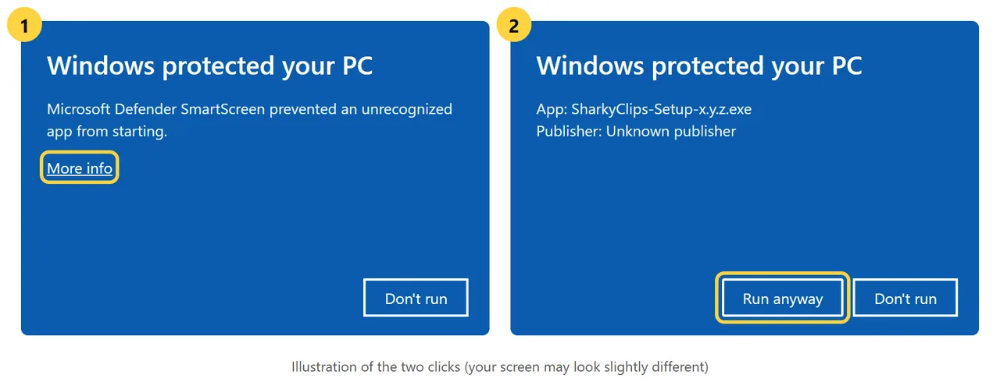

SharkyClips'i indir
İçinde her şey olan tek bir kurulum. Yönetici izni yok, ek program yok.
- Sürüm 1.2.74
- Yaklaşık 375 MB
- Windows 10 / 11, 64 bit
- Ücretsiz, hesap yok
Üç adımda kur
İndir
İndir düğmesine tıkla. Dosyanın adı SharkyClips-Setup-1.2.74.exe.
Kur
Aç ve İleri'ye, sonra Kur'a tıkla. Yaklaşık bir dakika sürer. Windows mavi bir mesaj mı gösteriyor? Aşağıya bak.
İlk açılış
SharkyClips tarayıcında açılır, dilini sorar ve bilgisayarını kontrol eder. Sonra bilgisayarına uygun yapay zekâ parçalarını bir kez indirir.
Sistem gereksinimleri
SharkyClips her açılışta donanımını kontrol eder ve çalışan en hızlı kurulumu seçer.
| Parça | En az | Önerilen |
|---|---|---|
| Sistem | Windows 10 (1809 ya da daha yeni) veya 11, 64 bit | Windows 11 |
| Bellek | 8 GB RAM (4 GB Hafif modda yavaşça çalışır) | 16 GB RAM |
| Ekran kartı | Ekran kartı gerekmez | 6 GB ya da daha fazla NVIDIA ekran kartı |
| Disk | Uygulama için yaklaşık 3 GB, yapay zekâ modelleri için 2-10 GB | Bir SSD, artı videoların için yer |
| İnternet | İlk açılış ve paylaşım için | Sonrasında çevrimdışı çalışır |
"Windows bilgisayarınızı korudu" mu?
Kurulum henüz ücretli bir sertifikayla imzalı değil, bu yüzden Microsoft Defender SmartScreen yeni bir indirme için uyarabilir. Yeni ücretsiz uygulamalarda bu normaldir.
- Ek bilgi'ye tıkla.
- Uygulamanın SharkyClips-Setup-1.2.74.exe olduğunu kontrol et.
- Yine de çalıştır'a tıkla.
Emin olmak mı istiyorsun? Her sürümün bir .sha256 dosyası var. PowerShell'de Get-FileHash SharkyClips-Setup-1.2.74.exe aynı sayıyı göstermeli.

Daha fazlası
Güncellemeler
Ayarlar → Güncellemeler → Güncellemeleri denetle. SharkyClips yeni sürümü sen kullanmıyorken kurar. Yenilikler.
Kaldırma
Windows Ayarlar → Uygulamalar → SharkyClips → Kaldır. Ayarlarını da silmek isteyip istemediğini sorar; videoların korunur.
macOS ve Linux
macOS için tek komutluk bir kurulum ve geliştiriciler için elle kurulum var. Windows kadar test edilmediler. Kurulum rehberine bak.